CompTIA · 2026 · Industry certification
CompTIA Security+ (SY0-701)
Earned the CompTIA Security+ certification through the SY0-701 examination. Issued 14 October 2026; valid through 14 October 2029.
view certificate ↗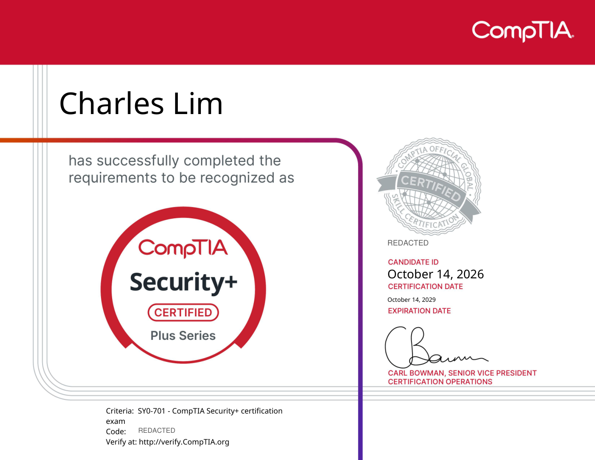
a few things i've picked up along the way.
A collection of qualifications, academic awards, and learning experiences I've picked up along the way.
Industry certifications, technical courses and practical qualifications.
CompTIA · 2026 · Industry certification
Earned the CompTIA Security+ certification through the SY0-701 examination. Issued 14 October 2026; valid through 14 October 2029.
view certificate ↗
ISC2 · 2025 · Industry Certification
An entry-level cybersecurity certification demonstrating foundational knowledge of security principles, controls and security operations.
view certificate ↗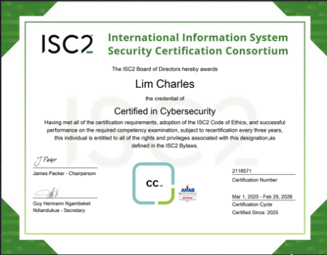
Fortinet Training Institute · 2026 · Course completion
Completed the self-paced FortiGate 7.6 Operator training course, focusing on working with FortiGate network security technology.
view certificate ↗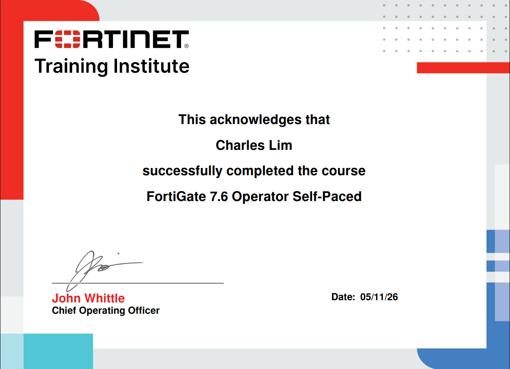
Anthropic · 2026 · Course completion
Completed Anthropic’s AI Fluency: Framework & Foundations programme, an introduction to AI fluency concepts and foundations.
view certificate ↗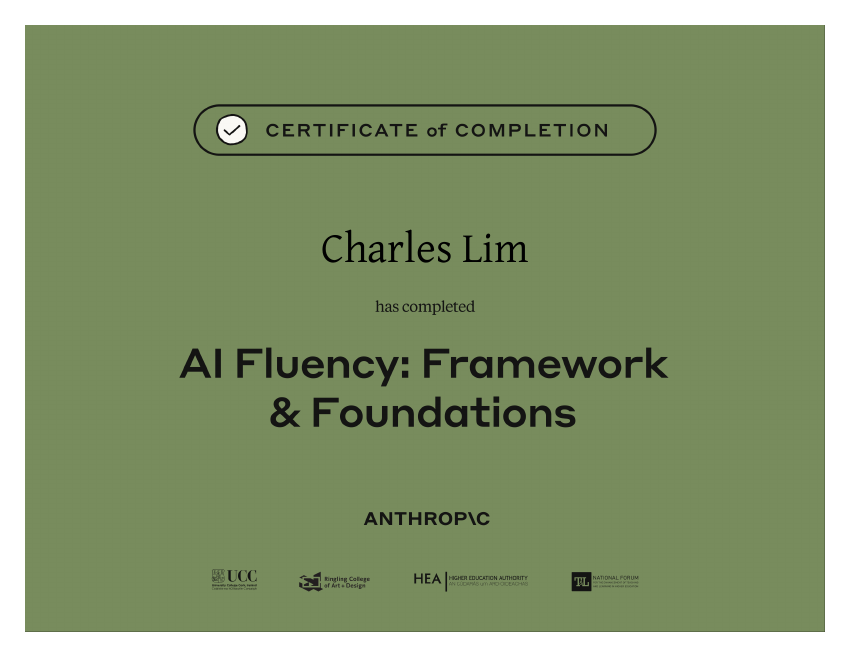
Lenovo by ITE · 2024 · Technical certificate
Passed the Lenovo Cloud Computing Equipment Operation and Maintenance Engineer examination during my time at ITE.
view certificate ↗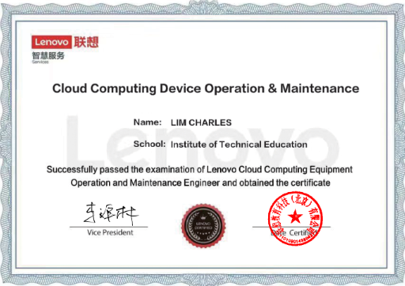
Institute of Technical Education · 2024 · Course completion
Completed an introductory module on writing effective prompts and working with AI tools.
view certificate ↗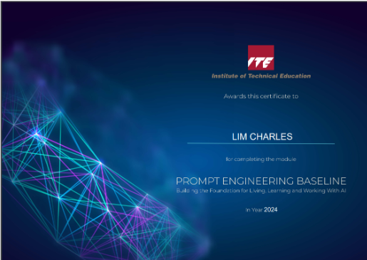
Recognition from school and industry for academic work and achievement.
Nanyang Polytechnic · 2025/2026 · Scholarship
Awarded the ITE Pathway Scholarship while pursuing the Diploma in Cybersecurity & Digital Forensics.
view certificate ↗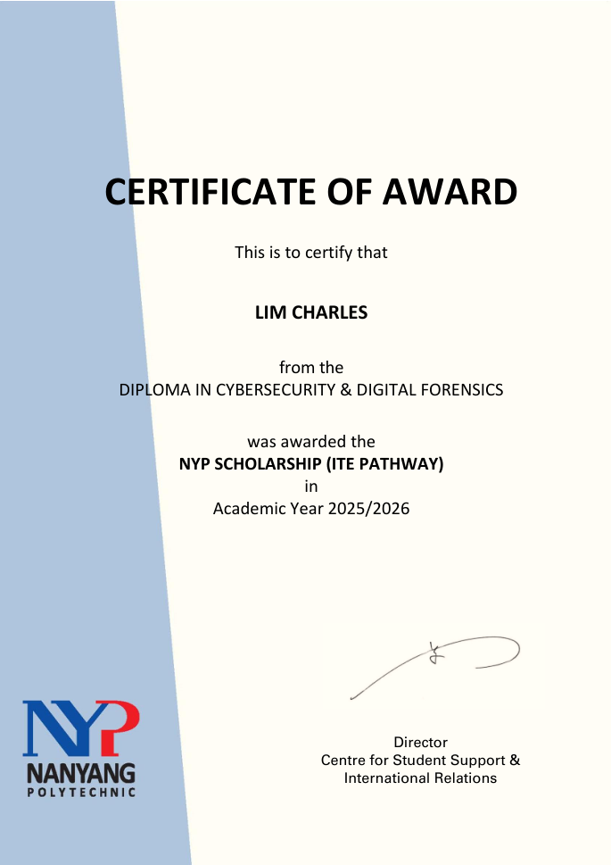
ST Engineering · 2025 · Award
Recognised for outstanding performance in the Higher Nitec in Cyber & Network Security course.
view certificate ↗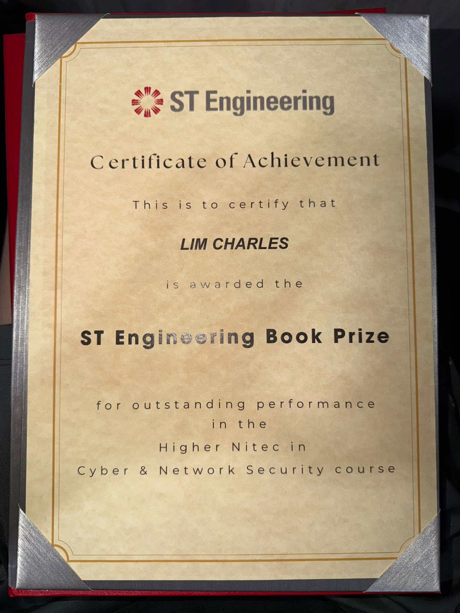
Institute of Technical Education · 2023–2024 · Academic distinction
Recognised for meritorious academic performance in the Higher Nitec programme, from October 2023 to March 2024.
view certificate ↗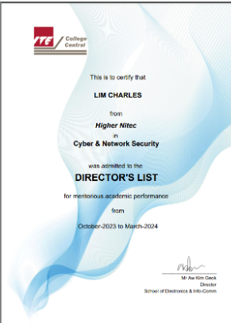
Institute of Technical Education · 2023 · Scholarship
Received the ITE Community Scholarship for academic performance.
view certificate ↗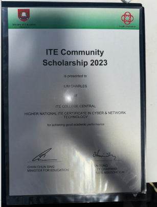
Six academic and skills awards spanning secondary school to polytechnic, kept together in one collection.
Recognised for academic performance and good conduct while studying at Nanyang Polytechnic.
Recognised for professional and soft skills during my Higher Nitec studies.
Recognised for excellent academic performance and good conduct in Secondary 4.
Recognised for excellent academic performance and good conduct in Secondary 3.
Recognised for academic performance and good conduct in Secondary 2.
Received for academic performance and good conduct in Secondary 2.
Opportunities to learn outside of the classroom.
NYP Infosec · 2025 · Participation
Participated in a three-day Capture the Flag event held from 18 to 20 June 2025.
view certificate ↗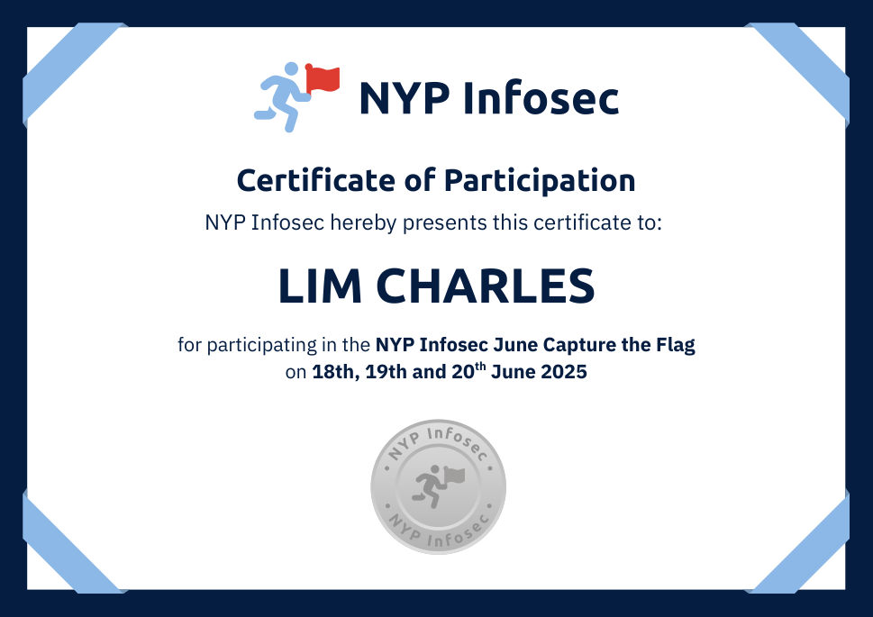
Anglo-Chinese School (Independent) · 2024 · Participation
Took part in a CTF competition, exploring decryption, steganography and privilege escalation techniques, including the use of CyberChef.
view certificate ↗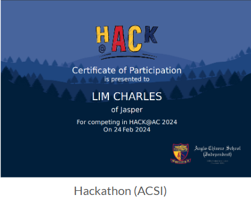
Institute of Technical Education · 2023 · Exchange programme
Joined an overseas exchange at Shenzhen Polytechnic in China, experiencing a different learning environment and teaching approach.
view certificate ↗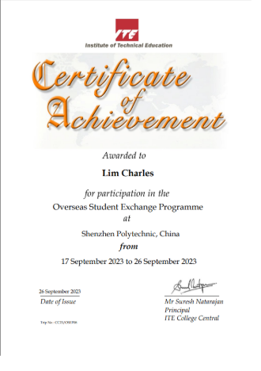